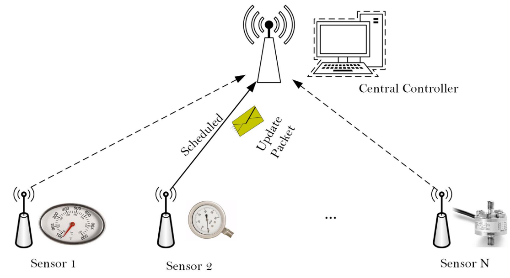
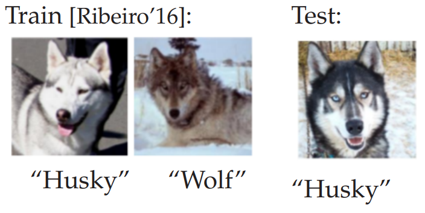
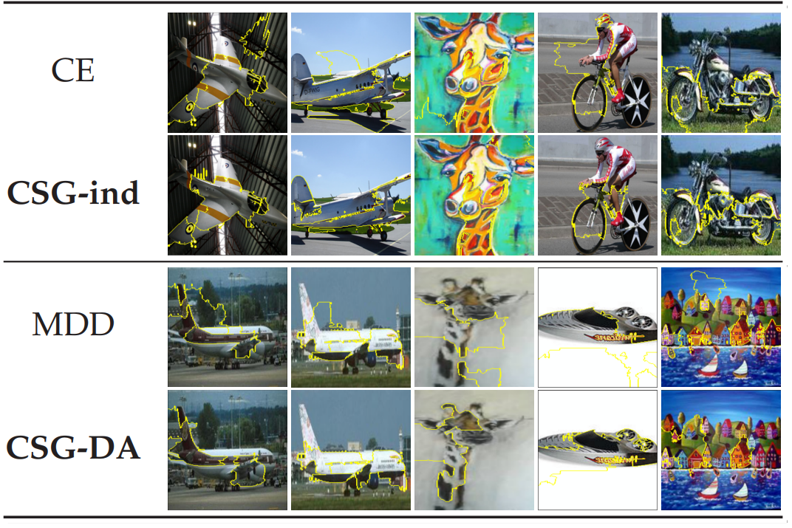

Research Interests
My research aims at exploring the fundamental limits, design efficient algorithms and prototyping for decision making in stochastic networks and stochastic systems.
Recently I am interested in:
Data Driven Network Resource Allocation
Semantic and Task Oriented Networking
Network Anomaly Detection
Communication and Computation Orchestration
Below are my past research projects:
Online Learning for Network Optimization
How to optimally manage the freshness of information updates (have a good estimation about \(X_t\) at the destination) sent from a source node to a destination via a channel when the channel statistics is unknown? By using the Age of Information (AoI) as a freshness metric, we first present a stochastic approximation algorithm that can learn the optimum sampling policy almost surely, and prove that the cumulative regret of the proposed algorithm is minimax order optimum. By incorportating more information on the time-varying process and design content agnostic data collection policies, our algorithm can lower the estimation error of \(X_t\). This project is supported by NSF-AI Institute Athena. Slides, Poster
Highlights
Publications
H. Tang, Y. Sun, and L. Tassiulas, “Sampling of the wiener process for remote estimation over a channel with unknown delay statistics,” submitted to IEEE Transactions on Networking.
H. Tang, Y. Chen, J.Wang, P. Yang and L. Tassiulas, “Age Optimal Sampling Under Unknown Delay Statistics,” IEEE Transactions on Information Theory, accepted
H. Tang, Y. Sun, and L. Tassiulas, “Sampling of the wiener process for remote estimation over a channel with unknown delay statistics,” in Proceedings of the Twenty-Third International Symposium on Theory, Algorithmic Foundations, and Protocol Design for Mobile Networks and Mobile Computing (Mobihoc 2022), New York, NY, USA: Association for Computing Machinery, 2022, pp. 51–60 (acceptance rate 15%)
H. Tang, Y. Chen, J. Sun, J. Wang and J. Song, “Sending Timely Status Updates through Channel with Random Delay via Online Learning,” IEEE INFOCOM 2022 - IEEE Conference on Computer Communications, London, United Kingdom, 2022, pp. 1819-1827. (acceptance rate 19.9%, Student Travel Grant Winner)
Cross-Layer Scheduling for Data Freshness Optimization
|
 |
Previous work reveal that, to it is necessary to keep data fresh, it is important to guarantee: (i) low latency; (ii) high data rate; and (iii) service regularity. Considering sensors in wireless networks have energy constraints and the wireless channels are time-varying, how to opportunistically generate, transmit and deliver data so that the the multi-objective optimization problem can be settled? Based on dynamic programming, bandits and large deviation analysis, I propose a joint data sampling, power control and scheduling algorithm that is optimum in large scale networks.
|
Highlights
The first optimal multi-user scheduling algorithm in AoI literatures: we show that for a network with \(N\) users and \(M\) bandwidth, by fixing \(N/M\) as a constant, the average AoI optimality gap between the proposed algorithm and the lower bound is \(\mathcal{O}(1/\sqrt{N})\), indicating that the proposed algorithm is optimal in large-scale networks. ITW2020 presentations Allerton 2019 presentations
Publications
H. Tang, P. Ciblat, J. Wang, M. Wigger and R. Yates, “Cache Updating Strategy Minimizing the Age of Information with Time-Varying Files’ Popularities,” 2020 IEEE Information TheoryWorkshop (ITW), 2021, pp. 1-5.
H. Tang, J. Wang, L. Song and J. Song, “Scheduling to Minimize Age of Information in Multi-State Time-Varying Networks with Power Constraints,” 2019 57th Annual Allerton Conference on Communication, Control, and Computing (Allerton), Monticello, IL, USA, 2019, pp. 1198-1205.
H. Tang, J. Wang, Z. Tang and J. Song, “Scheduling to Minimize Age of Synchronization in Wireless Broadcast Networks with Random Updates,” 2019 IEEE International Symposium on Information Theory (ISIT), Paris, France, 2019, pp. 1027-1031.
H. Tang, J. Wang, L. Song and J. Song, “Minimizing Age of Information With Power Constraints: Multi-User Opportunistic Scheduling in Multi-State Time-Varying Channels,” in IEEE Journal on Selected Areas in Communications, vol. 38, no. 5, pp. 854-868, May 2020.
H. Tang, J. Wang, Z. Tang and J. Song, “Scheduling to Minimize Age of Synchronization in Wireless Broadcast Networks With Random Updates,” in IEEE Transactions on Wireless Communications, vol. 19, no. 6, pp. 4023-4037, June 2020.
Signal Processing for mmWave Channel Estimation
By exploiting spatial sparse structure in mmWave channels, we propose an angle domain off-grid channel estimation algorithm for the uplink millimeter wave (mmWave) massive multiple-input and multiple-output (MIMO) systems. The proposed method is capable of identifying the angles and gains of the scatterer paths. Comparing the conventional channel estimation methods for mmWave systems, the proposed method achieves better performance in terms of mean square error. Numerical simulation results are provided to verify the superiority of the proposed algorithm.
Publications
Domain Adaptation and Out-of-Distribution Generation using Causal Inference
|
 |
Conventional supervised learning methods, especially deep ones, are found to be sensitive to out-of-distribution (OOD) examples, largely because the learned representation mixes the semantic factor with the variation factor due to their domain-specific correlation, while only the semantic factor causes the output. To address the problem, we propose a Causal Semantic Generative model (CSG) based on a causal reasoning so that the two factors are modeled separately, and developed a variational Bayesian method for training CSG, a method for OOD prediction from a single training domain. This work is done during my internship at Microsoft Research. Poster
|
|
 |
We prove that under certain conditions, CSG can identify the semantic factor by fitting training data.
Empirical study shows improved OOD performance over prevailing baselines.
|
|